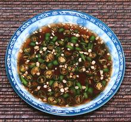

 |
Chili Garlic SauceMaylasia | ||||
| Makes: Effort: Sched: DoAhead: |
1/2 cup * 10 min Best |
This sauce is often used for spicing up soups and excellent placed on the table any time you need to make things mild to serve persons of varying chili tolerance. See also Comments. | |||
|
16 4 2 6 |
cl T T |
Thai Chilis (1) Garlic Rice Vinegar Soy Sauce |
Make: - (10 min)
|